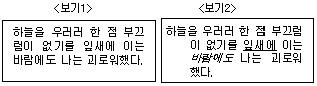
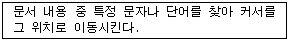
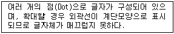
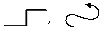
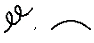
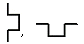

워드프로세서-2급(폐지) (2003-03-16 기출문제)
1과목: 워드프로세서 용어 및 기능
1. 다음 중 인쇄 장치의 선명도를 나타내는 단위는?
- CPS(Character Per Second)
- LPM(Line Per Minute)
- DPI(Dot Per Inch)
- PPM(Page Per Minute)
(정답률: 79%)

2. 다음 중 노트북 컴퓨터에서 주로 사용되며 손가락의 접촉과 이동을 감지하여 화면의 커서를 움직이는 입력장치는?
- 조이스틱(Joystick)
- 디지털 카메라(Digital Camera)
- 광 마우스(Optical Mouse)
- 터치 패드(Touch Pad)
(정답률: 86%)
3. 다음 중 문서를 호출하여 수정한 후 새 이름(다른 이름)으로 저장 할 경우의 설명으로 옳은 것은?
- 본래의 문서는 지워지고 새로운 이름의 문서만 남는다.
- 본래의 문서는 그대로 두고 새로운 이름으로 문서가 저장된다.
- 본래의 문서와 같은 이름으로는 저장이 불가능하다.
- 본래의 문서와 새로운 문서의 내용이 똑같아진다.
(정답률: 65%)
4. 다음 중 키보드에 대한 설명으로 옳지 않은 것은?
- [Shift] : [Ctrl], [Alt] 키와 마찬가지로 다른 키와 조합하여 사용한다.
- [Caps Lock] : 누를 때마다 삽입 또는 수정 상태로 전환되는 토글(Toggle) 키이다.
- [Space Bar] : 삽입모드일 경우 공백을 삽입하고 수정모드일 경우 커서 다음의 문자를 삭제한다.
- [Esc] : 선택된 기능이나 명령을 취소하거나 이전 상태로 복귀하고자 할 때 사용한다.
(정답률: 67%)
5. 다음 중 워드프로세서의 편집기능과 가장 관련이 없는 것은?
- 복사, 이동
- 찾기, 바꾸기
- 소트(Sort), 매크로(Macro)
- 스풀(Spool), DPI(Dot Per Inch)
(정답률: 75%)
6. 다음 중 머리말에 대한 설명으로 옳지 않은 것은?
- 모든 쪽의 윗부분에 문구를 넣고자 할 때 유용하다.
- 머리말 영역에 쪽번호를 넣을 수 있다.
- 홀수쪽과 짝수쪽의 머리말을 다르게 넣을 수 있다.
- 머리말의 문구는 글꼴과 크기, 속성 등을 변경할 수 있으나 선을 삽입할 수는 없다.
(정답률: 68%)
7. 다음 중 현재 줄의 첫머리로 커서를 이동시키는 키는?
- [Page Up]
- [Home]
- [Page Down]
- [Esc]
(정답률: 78%)
8. 작성된 문서의 파손이나 분실에 대비하여 파일을 따로 복사하는 작업을 무엇이라 하는가?
- 링크(Link)
- 백업(Backup)
- 옵션(Option)
- 압축
(정답률: 90%)
9. <보기1>의 문장을 <보기2>의 문장과 같이 편집한 경우 사용된 기능과 가장 거리가 먼 것은?

- 내어쓰기
- 밑줄
- 들여쓰기
- 기울임(이태릭체)
(정답률: 65%)
10. 다음 중 워드프로세서의 편집기능에 대한 설명으로 옳지 않은 것은?
- 빠진 글자를 입력하기 위해서는 수정 편집 상태에서 입력하는 것이 효과적이다.
- 여러 문장을 한꺼번에 삭제하기 위해서는 삭제할 부분을 블록 지정한 후 삭제하면 편리하다.
- 잘못 입력된 문자를 고치는 것을 수정이라고 한다.
- 삽입 편집 상태에서 [Enter] 키를 누르면 줄이 바뀌거나, 빈 줄이 삽입된다.
(정답률: 65%)
11. 다음은 워드프로세서 편집기능 중 무엇에 대한 설명인가?

- 치환(Replace)
- 검색(Search)
- 정렬(Sort)
- 워드 랩(Word Wrap)
(정답률: 62%)
12. 다음은 어떤 글꼴에 대한 설명인가?

- 비트맵(Bitmap)
- 트루타입(True Type)
- 벡터(Vector)
- 오픈 타입(Open Type)
(정답률: 88%)
13. 다음 중 자주 사용되는 단축키에 대한 설명으로 옳지 않은 것은?
- [Ctrl] + V : 붙여넣기
- [Ctrl] + C : 복사하기
- [Ctrl] + X : 이동하기
- [Ctrl] + Z : 실행 취소
(정답률: 75%)
14. 다음 중 문서 하단에 인용한 문헌의 제목이나 부가되는 설명 등을 나타내는 기능은?
- 두문(Header)
- 각주(Footnote)
- 미문(Footer)
- 색인(Index)
(정답률: 66%)
15. 다음 중 자주 사용되는 어휘나 도형을 간단한 약어로 등록시켜 놓고 필요할 때마다 호출하여 사용하는 기능은?
- 클립보드
- 버퍼
- 상용구
- 매크로
(정답률: 79%)
16. 사무문서를 쉽게 작성하고 판단사무를 작업사무화하는 것과 관계 있는 사무관리의 원칙은?
- 용이성
- 경제성
- 정확성
- 신속성
(정답률: 62%)
17. 결재권자가 휴가, 출장 기타의 사유로 결재할 수 없는 때에 그 직무를 대리하는자가 할 수 있는 것은?
- 위임 전결
- 후결
- 대결
- 후열
(정답률: 83%)
18. 2장 이상으로 이루어진 문서 앞장의 뒷면과 뒷장의 앞면에 걸쳐 찍는 도장을 무엇이라고 하는가?
- 관인
- 직인
- 청인
- 간인
(정답률: 52%)
19. 다음 중 줄(행) 단위의 이동이 발생하지 않는 교정부호는?
(정답률: 79%)
20. 다음 중 서로 상반되는 의미를 나타내는 교정부호끼리 짝지어진 것은?



(정답률: 81%)
2과목: PC 운영 체제
21. 한글 Windows 98에서 파일이나 폴더와 같은 특정 객체를 선택한 다음, 마우스 오른쪽 버튼을 누를 때 나타나는 메뉴를 무엇이라 하는가?
- 다운 메뉴
- 바로가기 메뉴
- 조절 메뉴
- 시작 메뉴
(정답률: 81%)
22. 한글 Windows 98에서 열려진 창을 닫거나 프로그램을 종료할 때 사용하는 바로가기 키는?
- [F5]
- [Alt] + [F4]
- [Alt] + [Tab]
- [F2]
(정답률: 86%)
23. 한글 Windows 98에서 [Ctrl] + C를 눌러서 특정 내용을 복사한 경우 그 내용이 임시로 저장되는 공간을 무엇이라고 하는가?
- 하드디스크
- 클립아트
- 로컬디스크
- 클립보드
(정답률: 76%)
24. 다음 중 한글 Windows 98의 도움말에 관한 설명으로 옳지 않은 것은?
- 검색을 이용하기 위해서는 특정한 키워드를 입력해야 한다.
- 색인을 이용할 때는 특정한 키워드를 입력할 수 없다.
- 인터넷을 통한 웹 도움말 검색이 가능하다.
- 전체 도움말 목차를 사용할 수 있다.
(정답률: 61%)
25. 한글 Windows 98의 바탕화면에서 바로가기 아이콘에 관한 설명으로 옳지 않은 것은?
- 특정한 파일이나 폴더의 위치에 대한 정보를 담고 있다.
- 확장자는 ‘lnk'이다.
- 바로가기를 삭제해도 원본 파일은 삭제되지 않는다.
- 보통 아이콘과는 달리 손바닥 그림이 아이콘을 받치고 있다.
(정답률: 64%)
26. 한글 Windows 98의 바탕화면의 파일들이 실제로 들어있는 폴더는?
- C:\Program Files\바탕화면
- C:\Windows\바탕화면
- C:\Windows\시작메뉴\바탕화면
- C:\Program Files\시작메뉴\바탕화면
(정답률: 47%)
27. 한글 Windows 98에서 바탕화면을 사용자 정의로 설정할 수 있으며, 인터넷 웹사이트 목록을 등록시켜 인터넷에서 정보, 뉴스 등의 최신 정보를 리얼타임(실시간)으로 표시할 수 있는 기능을 무엇이라 하는가?
- 폴더 열기
- 마우스 클릭
- 액티브 데스크톱
- 폴더를 웹페이지 형식으로
(정답률: 65%)
28. 한글 Windows 98에서 [제어판]내의 [마우스 등록정보] 창에서 설정할 수 없는 것은?
- 두 번 클릭의 속도를 조정
- 마우스 포인터의 이동 속도를 조정
- 마우스 포인터의 모양을 변경
- 한 번 클릭을 두 번 클릭으로 인식하게 변경
(정답률: 63%)
29. 한글 Windows 98에서 [제어판]내의 [디스플레이 등록정보] 창에서 설정할 수 없는 것은?
- 배경 화면
- 화면 보호기
- 화면 배색
- 아이콘 모양
(정답률: 69%)
30. 한글 Windows 98에서 시동 디스크를 작성할 때 선택하는 항목으로 가장 적절한 것은?
- [시작]-[설정]-[제어판]-[시스템]
- [시작]-[설정]-[제어판]-[프로그램 추가/제거]
- [시작]-[설정]-[제어판]-[하드웨어 추가]
- [시작]-[설정]-[제어판]-[내게 필요한 옵션]
(정답률: 46%)
31. 한글 Windows 98에서 임의의 폴더 내에 모든 파일이나 폴더를 전체 선택하려면, 주메뉴에서 [편집]-[전체선택]을 선택하면 된다. 이와 같은 기능을 수행하는 바로가기 키는?
- [Ctrl] + A
- [Ctrl] + F
- [Ctrl] + X
- [Ctrl] + 마우스클릭
(정답률: 67%)
32. 한글 Windows 98의 바탕화면에 있는 바로가기 아이콘에 대한 실제 해당 파일의 위치를 알아내는 방법은?
- [시작] - [찾기] - [파일 또는 폴더] 메뉴를 이용한다.
- 아이콘에 커서를 갖다놓고 마우스의 오른쪽 단추를 클릭 한 후 메뉴에서 [등록정보]를 선택한다.
- 아이콘에 커서를 갖다놓고 마우스의 왼쪽 단추를 두번 클릭한다.
- 도움말을 참조한다.
(정답률: 57%)
33. 한글 Windows 98에서 일반적인 파일의 등록정보 창에 나타나는 파일의 속성이 아닌 것은?
- 읽기 전용(R)
- 숨김(D)
- 기록(C)
- 사용자(U)
(정답률: 57%)
34. 한글 Windows 98에서는 기본 프린터를 몇 개까지 설정할 수 있는가?
- 1개
- 2개
- 3개
- 4개
(정답률: 81%)
35. 한글 Windows 98에서 웨이브 파일(*.wav)을 듣거나 편집할 수 있는 프로그램으로 가장 적합한 것은?
- 웹 게시 마법사
- 시스템 도구
- 윈도우 미디어 플레이어
- 녹음기
(정답률: 51%)
36. 한글 Windows 98에서 텍스트 내용을 편집하여 아스키 형식으로만 저장하고 열 수 있는 문서 편집기는?
- 메모장
- 사용자 정의 문자 편집기
- 글꼴
- 그림판
(정답률: 68%)
37. 한글 Windows 98의 디스크 관리도구 결과 중에서 파일의 접근 속도를 느리게 하는 것은?
- 디스크 압축
- 디스크 정리
- 디스크 검사
- 디스크 조각 모음
(정답률: 49%)
38. 한글 Windows 98에서 FAT(File Allocation Table)에 대한 다음 설명 중 옳은 것은?
- FAT는 네트워크상에서 파일을 원격으로 전송하는 통신 규약이다.
- FAT는 시스템 자원을 관리하는 테이블이다.
- FAT는 바이러스 탐지 프로그램의 일종이다.
- FAT는 파일의 위치에 대한 정보를 기록하는 테이블이다.
(정답률: 42%)
39. 다음 중 한글 Windows 98에서 인터넷 사용을 위해 반드시 설치해야 하는 프로토콜은 무엇인가?
- IPX/SPX
- Telnet
- TCP/IP
- FTP
(정답률: 73%)
40. 한글 Windows 98에서 폴더를 공유하려고 할 때 설정할 수 있는 사용 권한이 아닌 것은?
- 읽기/쓰기
- 암호에 따라 다름
- 읽기 전용
- 쓰기 전용
(정답률: 52%)
3과목: PC 기본 상식
41. 다음 중 하나의 컴퓨터에 두 개 이상의 CPU를 두어 프로그램을 동시에 처리하는 방식을 의미하는 용어는 어느 것인가?
- 다중프로그래밍(Multiprogramming)
- 시분할 처리(Time sharing)
- 다중처리(Multiprocessing)
- 다중사용자(Multiuser)
(정답률: 71%)
42. 다음 중 CPU와 메모리 사이의 정보 전송에 사용되는 통로를 무엇이라고 하는가?
- 버스
- 레지스터
- 블록
- 보조기억장치
(정답률: 77%)
43. 다음 중 중앙처리장치를 구성하는 장치로 주기억장치로부터 프로그램 명령어를 읽어들여 이를 해독하고 처리하는 장치는?
- 연산장치
- 제어장치
- 레지스터
- 버스
(정답률: 40%)
44. 컴퓨터의 주기억장치는 여러 작은 저장 영역으로 구성되어 있으며, 각 저장 영역은 내부에서 그 위치를 지정하기 위한 유일한 숫자를 배정 받아야 한다. 이러한 숫자를 가르키는 용어는?
- 주소(address)
- 포인터(pointer)
- 비트(bit)
- 함수(function)
(정답률: 43%)
45. 다음 중 데이터 전송속도를 나타내는 bps에 대한 설명으로 옳은 것은?
- 초당 몇 비트를 전송할 수 있는가를 나타내는 단위이다.
- 초당 몇 바이트를 전송할 수 있는가를 나타내는 단위이다.
- 분당 몇 비트를 전송할 수 있는가를 나타내는 단위이다.
- 분당 몇 바이트를 전송할 수 있는가를 나타내는 단위이다.
(정답률: 50%)
46. 다음 중 운영체제가 제공하는 기본적인 기능과 관계가 없는 것은?
- 데이터베이스 관리
- 사용자 인터페이스의 제공
- 프로세서 관리
- 입출력 관리
(정답률: 45%)
47. 다음 중 운영체제가 아닌 것은?
- 인터넷 익스플로러(Internet Explorer)
- 유닉스(Unix)
- 윈도(Windows)
- 맥(Mac)
(정답률: 47%)
48. 다음 중 각종 응용 프로그램들에 대한 설명으로 옳지 않은 것은?
- 워드프로세서 : 문서를 효율적으로 작성, 편집, 인쇄, 저장할 수 있도록 지원하는 프로그램
- 스프레드시트 : 수치 계산과 통계처리 작업에 활용되는 프로그램
- 그래픽 소프트웨어 : 그림 편집 및 출력을 위해 사용되는 프로그램
- 프리젠테이션 : 원고 입력, 편집, 조판 등 출판에 사용되는 프로그램
(정답률: 48%)
49. 다음 중 컴퓨터 바이러스에 대한 설명으로 옳지 않은 것은?
- 컴퓨터 바이러스는 네트워크를 통하여 감염될 수 있다.
- 전원이 꺼져 있는 동안에는 바이러스가 침투할 수 없다.
- 컴퓨터 바이러스가 활동하는 시기는 부팅 순간만이 아니라 컴퓨터 바이러스 종류에 따라 아무때나 활동할 수 있다.
- 컴퓨터가 있는 주변 환경의 습도가 높으면 컴퓨터 바이러스가 왕성하게 발생한다.
(정답률: 63%)
50. 하드디스크를 파티션(Partition)할 때 사용되는 명령은?
- FORMAT
- FDISK
- MAKE
- INSTALL
(정답률: 59%)
51. 다음 중 나머지 셋과 다른 종류의 멀티미디어 데이터를 나타내는 것은?
- BMP
- GIF
- JPG
- MP3
(정답률: 80%)
52. 인터넷을 통해 전세계의 멀티미디어 정보를 검색할 수 있는 인터넷 종합 정보 검색 서비스를 무엇이라 하는가?
- 가상 현실(VR : Virtual Reality)
- 주문형 비디오(VOD : Video On Demand)
- 화상 통신 회의(VCS : Video Conference System)
- 월드 와이드 웹(WWW : World Wide Web)
(정답률: 66%)
53. 다음 중 멀티미디어 데이터의 입력장치가 아닌 것은?
- 마이크
- 디지털 카메라
- 플로터
- 스캐너
(정답률: 53%)
54. 다음 중 멀티미디어 컨텐츠를 제작하는 저작 도구와 거리가 먼 것은?
- 툴북(Tool Book)
- 디렉터(Director)
- 오소웨어(Authorware)
- 윈도 미디어 플레이어(Windows Media Player)
(정답률: 56%)
55. 다음 중 인터넷 상의 정보위치를 표기하는 표준 주소 방식인 URL(Uniform Resource Locator)의 형식으로 옳은 것은?
- 프로토콜 이름 :// 호스트도메인 이름 / 파일위치 및 이름
- 프로토콜 이름 :// 파일위치 및 이름 / 호스트도메인 이름
- 호스트도메인 이름 :// 프로토콜 이름 / 파일위치 및 이름
- 호스트도메인 이름 :// 파일위치 및 이름 / 프로토콜 이름
(정답률: 42%)
56. E-mail을 발송했는데 그 E-mail이 그대로 반송되어 돌아왔다. 이를 해결하기 위해 조치해야 할 행동으로 옳은 것은?
- E-mail의 제목을 쓰지 않았는지 확인한다.
- 수신자의 PC가 현재 작동 중인지 확인한다.
- E-mail 수신자의 주소가 올바르게 쓰였는지 확인한다.
- E-mail의 내용에 문법적인 오류가 없는지 확인한다.
(정답률: 67%)
57. 다음 중 인터넷 상에 하이퍼텍스트 문서를 작성하기 위해 사용되는 WWW의 기본 언어는?
- HTML
- CGI
- JAVA
- ASP
(정답률: 72%)
58. 다음 중 전자상거래의 특징으로 가장 거리가 먼 것은?
- 소비자는 제품을 한자리에서 싼값으로 살 수 있다.
- 전세계 네티즌을 구매자로 삼을 수 있다.
- 전자상거래 운영시 유통비용과 건물임대료 등의 운영비를 크게 줄일 수 있다.
- 다양한 상품의 비교 및 검색이 어렵다.
(정답률: 67%)
59. 다음 중 인터넷 서비스를 사용할 때 기본적으로 지켜야 할 태도로서 옳지 않은 것은?
- 대화방이나 공개 편지에서는 상대방에 대한 예절을 지킨다.
- 광고 또는 음란 및 사행성 메일은 보내지 않는다.
- 게시판에 다른 사람을 비방하는 글은 올리지 않는다.
- 부정하다고 여겨지는 내용은 무조건 공개 게시판에 올려 여론의 심판을 받게 한다.
(정답률: 80%)
60. 다음 중 컴퓨터 바이러스에 대한 대비 방법으로 가장 거리가 먼 것은?
- 출처가 불분명한 프로그램을 사용하지 않는다.
- 의심스러운 전자메일은 열어보지 않는다.
- 백신 프로그램으로 정기검사를 하고 미리 예방한다.
- 다른 컴퓨터에 침입하는 해킹방법을 배워 둔다.
(정답률: 85%)